Hi! I am a fourth-year Ph.D. student in the Department of Automation, Tsinghua University, advised by Prof. Song-Chun Zhu. I am also a research intern at Beijing Institute for General Artificial Intelligence (BIGAI), supervised by Dr. Yixin Chen and Dr. Siyuan Huang. Before beginning my Ph.D. study, I received my B.S. in the School of Electronic and Information Engineering, Beihang University. My research interests lie in computer vision, especially 3D/4D scene modeling, video generation, and world models. I warmly welcome academic discussions and collaborations!
News
- 2026.10: GAD, LongForcing, and OneLA were released as preprints, covering consistent video generation, long-horizon world rollout, and shared latent actions for world models.
- 2026.10: DecomVoxel was released as a SIGGRAPH Asia 2026 - Journal Track (TOG) work on decompositional scene reconstruction with 3D-native priors.
- 2026.07: ABot-World-0 was released as a real-time interactive world model running on a single desktop GPU.
- 2026.04: SceneVerse++ was released as a CVPR 2026 work on lifting internet-level video data for 3D scene understanding.
- 2026.02: Neural Gaussian Force Fields was released as an ICLR 2026 work on physics-grounded 4D dynamics.
- 2025.10: G4Splat was released as an ICLR 2026 work on geometry-guided Gaussian splatting.
Preprints
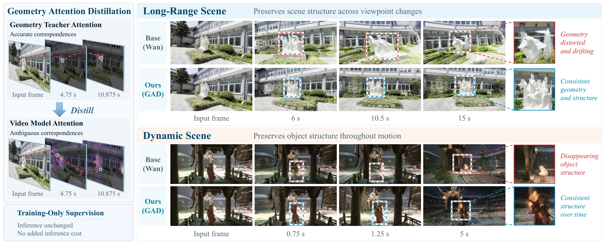
GAD: Geometry Attention Distillation for Consistent Video Generation
Junfeng Ni*,
Ziyu Zhu*,
Fan Jiang*✉,
Yu Liu,
Chiyu Wang, Jiawei Zhang, Zhaoxu Sun, Mu Xu,
Siyuan Huang✉,
Yixin Chen✉
Distills geometric correspondences into video attention to improve scene and object consistency without adding inference modules.

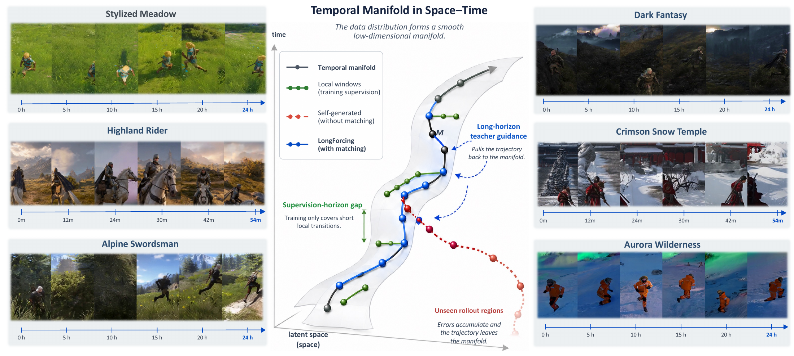
LongForcing: Scaling Temporal Manifold Matching for Long-Horizon World Rollout
Ziyu Zhu*, Zhaoxu Sun*, Fan Jiang*, Mengchao Wang*,
Junfeng Ni, Ting-Bing Xu, Zhicheng Liu, Mu Xu
Extends teacher supervision over longer self-generated rollouts to reduce drift in long-horizon video world models.
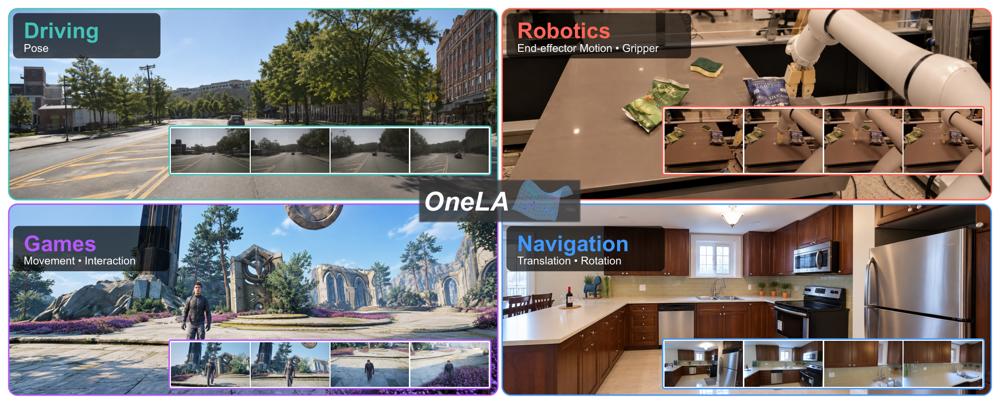
OneLA: Learning Many Worlds from Latent Actions
Ziyu Zhu, Zhaoxu Sun, Fan Jiang, Chiyu Wang,
Junfeng Ni, Mu Xu
Learns a shared latent action interface from videos to support controllable world models across diverse domains.
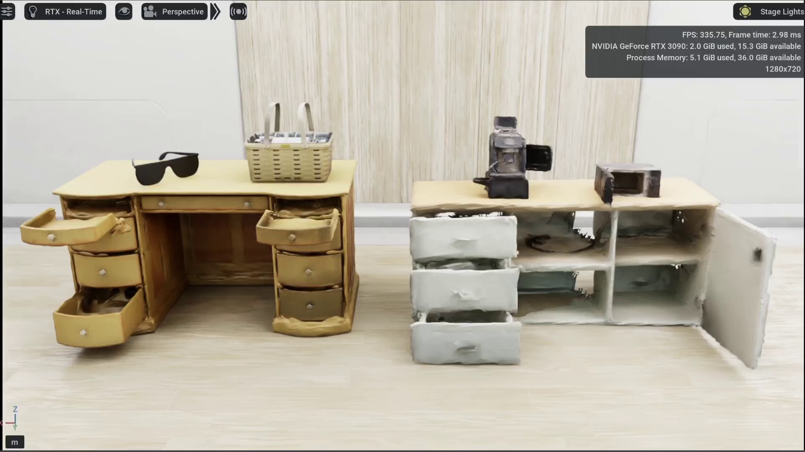
VideoArtGS: Building Digital Twins of Articulated Objects from Monocular Video
Yu Liu,
Baoxiong Jia✉,
Ruijie Lu,
Chuyue Gan,
Huayu Chen,
Junfeng Ni,
Song-Chun Zhu,
Siyuan Huang✉
Reconstructs high-fidelity digital twins of articulated objects from monocular video with motion-prior guidance and part-aware deformation.
Publications

DecomVoxel: Harnessing 3D-Native Priors with Guided In-situ Denoising Optimization for Decompositional Scene Reconstruction
Junfeng Ni*,
Zirui Zhou*,
Yixin Chen✉,
Yu Liu,
Nan Jiang,
Zhifei Yang,
Song-Chun Zhu,
Siyuan Huang✉
Uses guided in-situ denoising with 3D-native priors to reconstruct complete, editable scenes while preserving their spatial layouts.
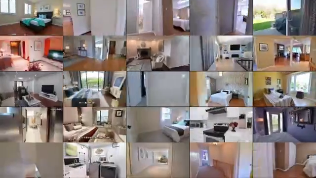
SceneVerse++: Lifting Unlabeled Internet-level Data for 3D Scene Understanding
Yixin Chen,
Yaowei Zhang,
Huangyue Yu,
Junchao He,
Yan Wang,
Jiangyong Huang,
Hongyu Shen,
Junfeng Ni,
Shaofei Wang,
Baoxiong Jia,
Song-Chun Zhu,
Siyuan Huang
Uses automated data engines to transform unlabeled web videos into training data for 3D scene understanding.
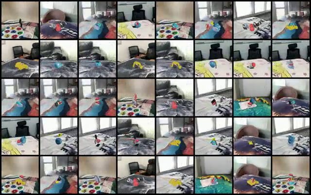
Learning Physics-Grounded 4D Dynamics with Neural Gaussian Force Fields
Shiqian Li*,
Ruihong Shen*,
Junfeng Ni,
Chang Pan,
Chi Zhang✉,
Yixin Zhu✉
Models force fields over 3D Gaussian representations for efficient and physically grounded 4D video dynamics.
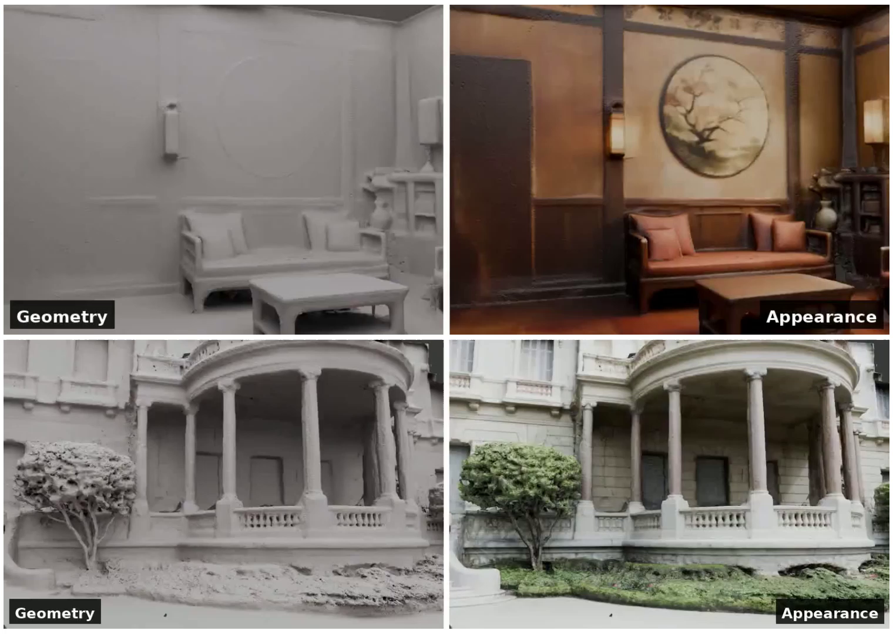
G4Splat: Geometry-Guided Gaussian Splatting with Generative Prior
Junfeng Ni,
Yixin Chen✉,
Zhifei Yang,
Yu Liu,
Ruijie Lu,
Song-Chun Zhu,
Siyuan Huang✉
Uses geometry guidance to make generative priors more reliable for Gaussian-splatting scene reconstruction.
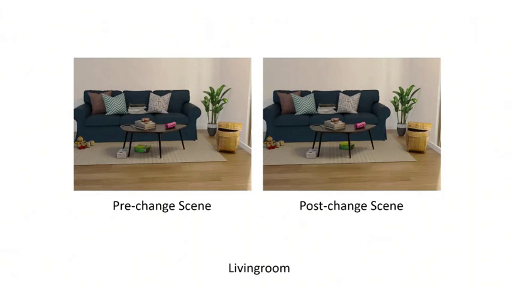
3D Scene Change Modeling with Consistent Multi-View Aggregation
Zirui Zhou,
Junfeng Ni,
Shujie Zhang,
Yixin Chen✉,
Siyuan Huang✉
Detects object-level 3D scene changes through consistent multi-view aggregation and continual reconstruction.
DreamArt: Generating Interactable Articulated Objects from a Single Image
Ruijie Lu,
Yu Liu,
Jiaxiang Tang,
Junfeng Ni,
Yuxiang Wang,
Diwen Wan,
Gang Zeng✉,
Yixin Chen✉,
Siyuan Huang✉
Generates part-segmented, interactable articulated assets from one image with articulation and texture refinement.
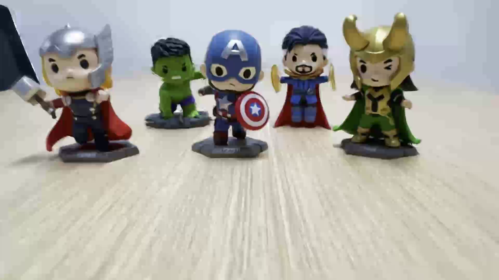
Trace3D: Consistent Segmentation Lifting via Gaussian Instance Tracing
Hongyu Shen*,
Junfeng Ni*,
Yixin Chen✉,
Weishuo Li,
Mingtao Pei,
Siyuan Huang✉
Improves 2D-to-3D segmentation lifting by tracing instance consistency across Gaussian representations.
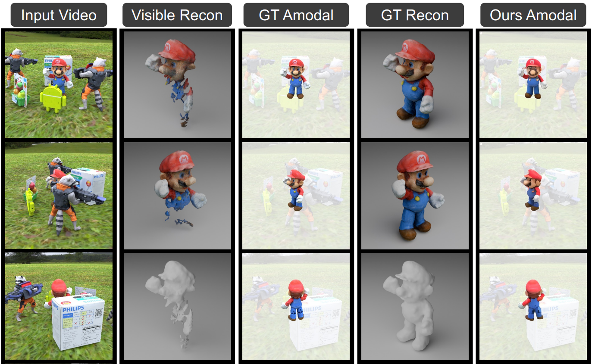
TACO: Taming Diffusion for in-the-wild Video Amodal Completion
Ruijie Lu,
Yixin Chen✉,
Yu Liu,
Jiaxiang Tang,
Junfeng Ni,
Diwen Wan,
Gang Zeng✉,
Siyuan Huang✉
Adapts video diffusion models for consistent amodal object completion in challenging in-the-wild videos.
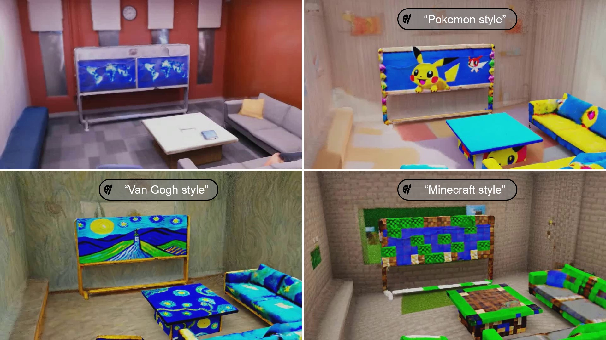
Decompositional Neural Scene Reconstruction with Generative Diffusion Prior
Junfeng Ni,
Yu Liu,
Ruijie Lu,
Zirui Zhou,
Song-Chun Zhu,
Yixin Chen✉,
Siyuan Huang✉
Combines decompositional reconstruction and diffusion priors to recover complete objects in sparse-view scenes.
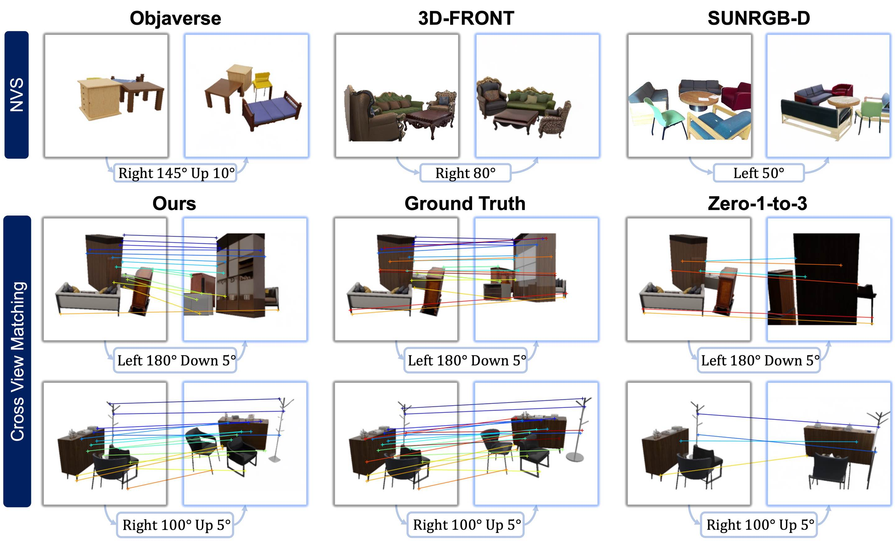
MOVIS: Enhancing Multi-Object Novel View Synthesis for Indoor Scenes
Ruijie Lu*,
Yixin Chen*,
Junfeng Ni,
Baoxiong Jia,
Yu Liu,
Diwen Wan,
Gang Zeng,
Siyuan Huang
Improves structure-aware multi-object novel view synthesis and cross-view consistency for indoor scenes.
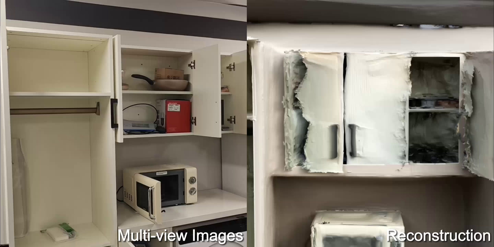
Building Interactable Replicas of Complex Articulated Objects via Gaussian Splatting
Yu Liu*,
Baoxiong Jia*,
Ruijie Lu,
Junfeng Ni,
Song-Chun Zhu,
Siyuan Huang
Builds articulated object replicas with canonical Gaussians and part dynamics modeling.
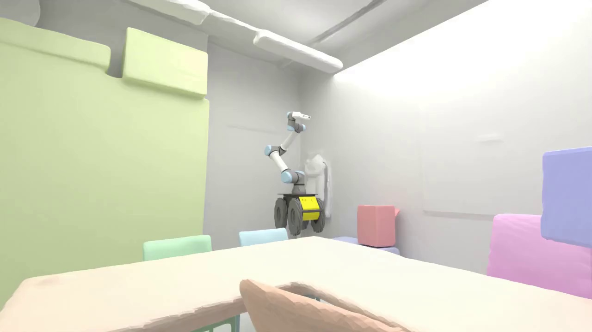
PhyRecon: Physically Plausible Neural Scene Reconstruction
Junfeng Ni*,
Yixin Chen*,
Bohan Jing,
Nan Jiang,
Bin Wang,
Bo Dai,
Puhao Li,
Yixin Zhu,
Song-Chun Zhu,
Siyuan Huang
Introduces differentiable physics into neural scene reconstruction to improve physical plausibility.
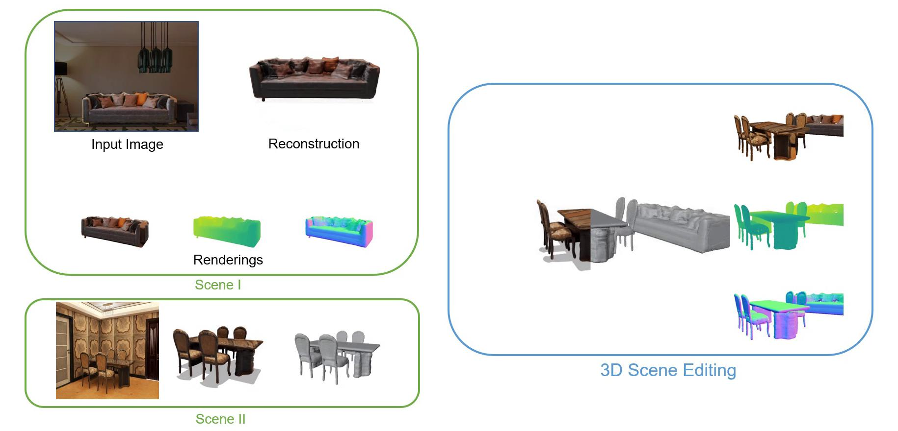
Single-view 3D Scene Reconstruction with High-fidelity Shape and Texture
Yixin Chen*,
Junfeng Ni*,
Nan Jiang,
Yaowei Zhang,
Yixin Zhu,
Siyuan Huang
Recovers high-fidelity shape and texture from a single image with 3D and 2D supervision.